Decay¶
| Author: | Anthony Scopatz |
|---|
The Bateman equations governing radioactive decay are an important subexpression of generalized transmutation equations. In many cases, it is desirable to compute decay on its own, outside of the presence of an neutron or photon field. In this case radioactive decay is a function solely on intrinsic physical parameters, namely half-lives. This document recasts the Bateman equations into a form that is better suited for computation than the traditional expression.
Canonical Bateman Equations for Decay¶
The canonical expression of the Bateman equations for a decay chain
proceeding from a nuclide  to a nuclide
to a nuclide  at time
at time
 following a specific path is as follows [1]:
following a specific path is as follows [1]:
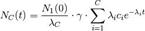
The symbols in this expression have the following meaning:
| symbol | meaning |
|---|---|
 |
length of the decay chain |
 |
index for ith species, on range [1, C] |
 |
index for jth species, on range [1, C] |
|
time [seconds] |
| 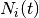 | number density of the ith species at time t |
| 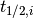 | half-life of the ith species |
 |
decay constant of ith species,  |
 |
The total branch ratio for this chain |
Additionally,  is defined as:
is defined as:
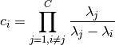
Furthermore, the total chain branch ratio is defined as the product of the branch ratio between any two species [2]:
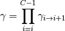
Minor modifications are needed for terminal species: the first nuclide of a decay chain and the ending stable species. By setting 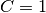, the Bateman equations can be reduced to simply:
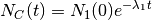
For stable species, the appropriate equation is derived by taking the limit
of when the decay constant of the stable nuclide (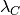) goes to
zero. Also notice that every  contains exactly one
in the numerator which cancels with the in the denominator
in front of the summation:
contains exactly one
in the numerator which cancels with the in the denominator
in front of the summation:
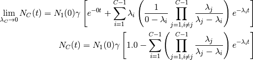
Binary Reformulation of Bateman Equations¶
There are two main strategies can be used to construct a version of these equations that is better suited to computation, if not clarity.
First, lets aim for minimizing the number of operations that must be performed to achieve the same result. This can be done by grouping constants together and pre-calculating them. This saves the computer from having to perform the same operations at run time. It is possible to express the Bateman equations as a simple sum of exponentials
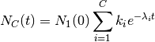
where the coefficients  are defined as:
are defined as:
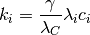
If are computed at run time then the this expression results in much more
computational effort that than the original Bateman equations since 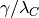
are brought into the summation. However, when are pre-caluclated,
many floating point operations are saved by avoiding explicitly computing .
The second strategy is to note that computers are much better at dealing with powers of
2 then then any other base, even  . Thus the
. Thus the exp2(x) function, or ,
is faster than the natural exponential function exp(x), 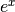. As proof of this
the following are some simple timing results:
In [1]: import numpy as np
In [2]: r = np.random.random(1000) / np.random.random(1000)
In [3]: %timeit np.exp(r)
10000 loops, best of 3: 26.6 µs per loop
In [4]: %timeit np.exp2(r)
10000 loops, best of 3: 20.1 µs per loop
This is a savings of about 25%. Since the core of the Bateman equations are exponentials, it is worthwhile to squeeze this algorithm as much as possible. Luckily, the decay constant provides an intrinsic mechanism to convert to base-2:
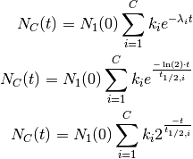
This expression can be further collapsed by defining  to be the precomputed
exponent values:
to be the precomputed
exponent values:
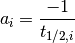
Thus, the final form of the binary representation of the Bateman equations are as follows:
General Formulation:
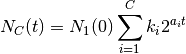
First Nuclide in Chain:
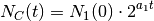
Stable Nuclide:
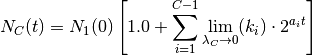
With completely precomputed  , , and the
, , and the exp2() function, this
formulation minimizes the number of floating point operations while completely
preserving physics. No assumptions were made aside from the Bateman equations
themselves in this proof.
Note that it is not possible to reduce the number of operations further. This
is because and cannot be combined without adding further
operations.
Implementation Specific Approximations¶
The above formulation holds generally for any decay chain. However, certain approximations are used in practice to reduce the number of chains and terms that are calculated.
- Decay chains coming from spontaneous fission are not tallied as they lead to an explosion of the total number of chains while contributing to extraordinarily rare branches.
- Decay alphas are not treated as He-4 production.
- For chains longer than length 2, any
term whose half-life is less than
 of the sum of all
half-lives in the chain is dropped. This filtering prevents excessive
calculation from species which do not significantly contribute to
end atom fraction. The threshold was chosen as
because it is a reasonable naive estimate of floating point error after
many operations. If the filtering causes there to be less than
two terms in the summation, then the filtering is turned off and all
terms are computed.
of the sum of all
half-lives in the chain is dropped. This filtering prevents excessive
calculation from species which do not significantly contribute to
end atom fraction. The threshold was chosen as
because it is a reasonable naive estimate of floating point error after
many operations. If the filtering causes there to be less than
two terms in the summation, then the filtering is turned off and all
terms are computed. - To prevent other sources of floating point error, a nuclide is determined to be stable when 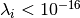, rather than when 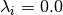.
- If a chain has any
NaNdecay constants, the chain in rejected. - If a chain has any infinite , the chain in rejected.
In principle, each of these statements is reasonable. However, they may preclude desired behavior by users. In such a situation, these assumptions should be revisited.
Additional Information¶
For further discussion, please see:
Note that the benchmark study shows quite high agreement between this method and ORIGEN v2.2.
References¶
| [1] | Jerzy Cetnar, General solution of Bateman equations for nuclear transmutations, Annals of Nuclear Energy, Volume 33, Issue 7, May 2006, Pages 640-645, http://dx.doi.org/10.1016/j.anucene.2006.02.004. |
| [2] | Logan J. Harr. Precise Calculation of Complex Radioactive Decay Chains. M.Sc thesis Air Force Institute of Technology. 2007. http://www.dtic.mil/dtic/tr/fulltext/u2/a469273.pdf |